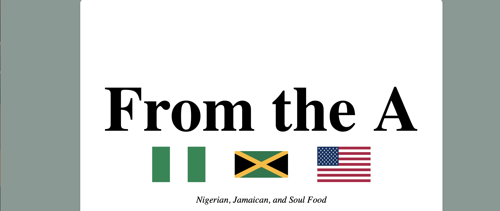

Projects
Profile Card Layout
A responsive profile card layout using CSS Flexbox.

Interactive NBA Card
Clean, modern responsive card design for NBA card collectors and 2K players alike.

Glass-Style Weather App
A modern weather app UI using HTML and CSS with glassmorphism and forecast display.

Magazine Cover Design
Modern magazine layout using CSS typography and background images. Inspired by SLAM Magazine.

Restaurant Menu Design
Visually appealing menu with categories, prices, images, and advanced CSS selectors.
Skin Care Newsletter
A subtle, clean design for skincare enthusiasts. Inspired by Ulta Beauty.